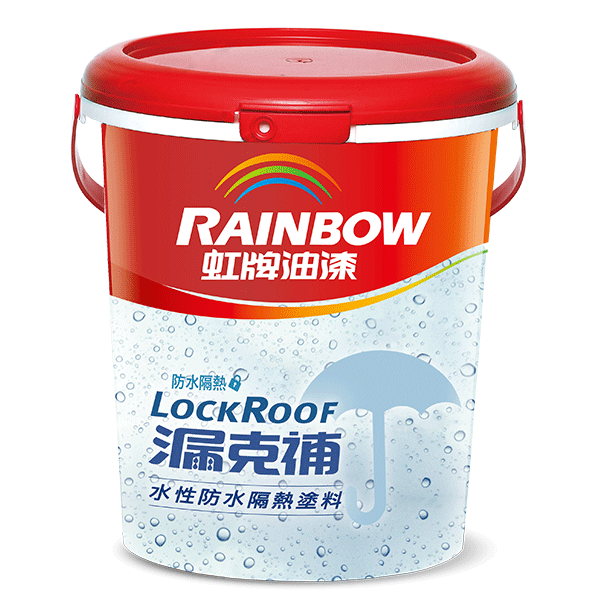

期末實作測試 學號:91135112 姓名:卓琮善
防水工程介紹
注意事項
注意事項
- 在进行防水工程时，有一些重要的注意事项需要特别关注，以确保施工质量和防水效果达到预期：
材料选择和使用
- 基面处理：确保施工前基面干净、平整，无灰尘、油脂或其它污染物。修补并填平裂缝、洞孔和凹陷，确保基面结实。
- 材料选择：根据工程设计要求和环境特点选择合适的防水材料。确保材料质量符合相关标准，适合施工环境。
- 施工环境控制：控制施工环境的温度和湿度，确保在材料施工和干燥过程中符合要求，避免温度过高或过低对材料施工造成影响。

质量检查和验收
检查每一道工序：在施工过程中进行必要的质量检查和测试，如涂层厚度、胶接强度等。及时发现问题并进行修正。
验收标准：防水工程完成后，按照相关标准进行严格的质量验收。确保防水系统的质量和效果符合设计要求和施工规范。
接缝处理：墙角、管道周围等关键部位的接缝应采用合适的防水处理措施，确保防水层的连续性和完整性。
养护期间：根据材料的养护要求，制定和执行合适的养护计划。避免在养护期间对防水层造成损坏或负荷。
定期维护：定期检查和维护防水层，确保其长期有效性。特别是在暴露在外的区域或者易受损的地方，如屋顶、阳台等。